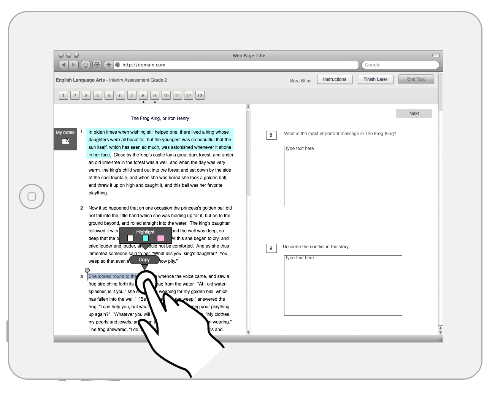
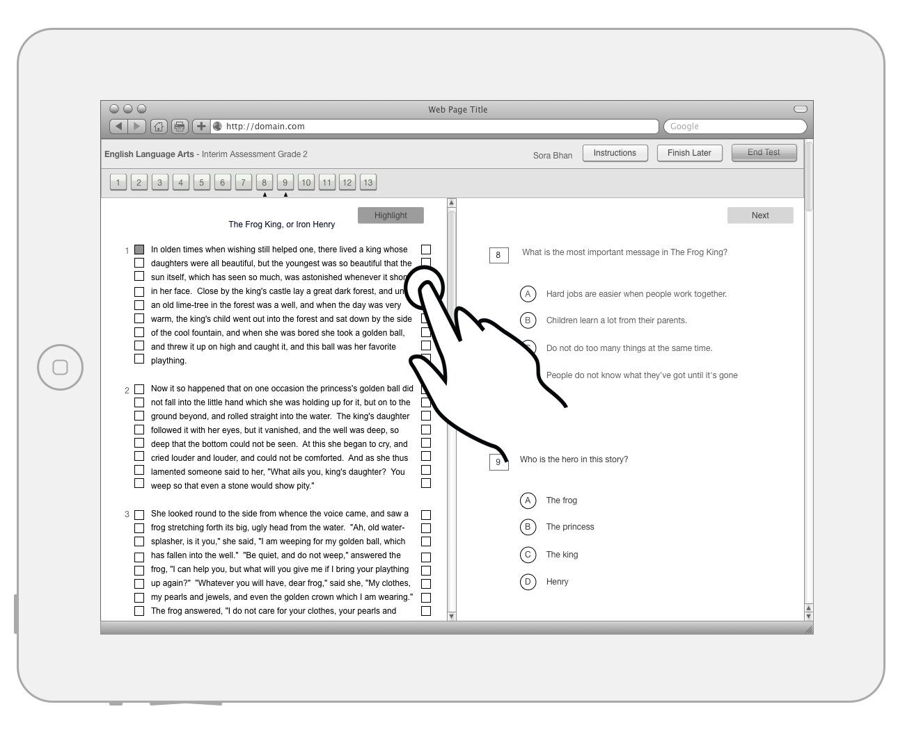
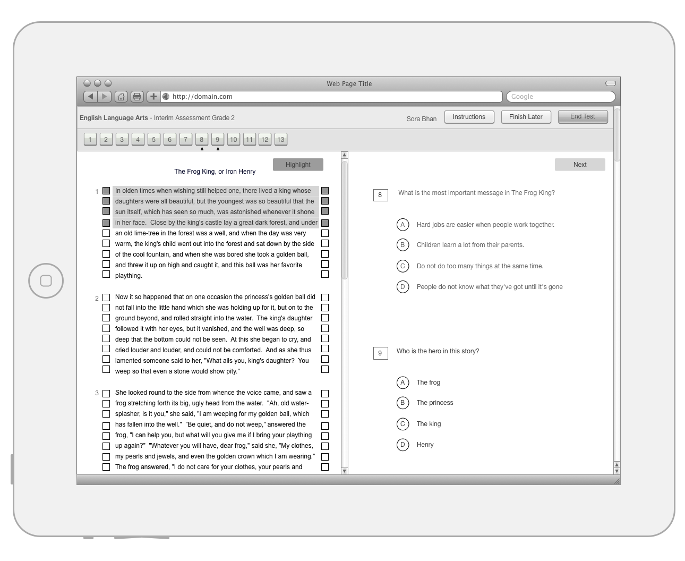
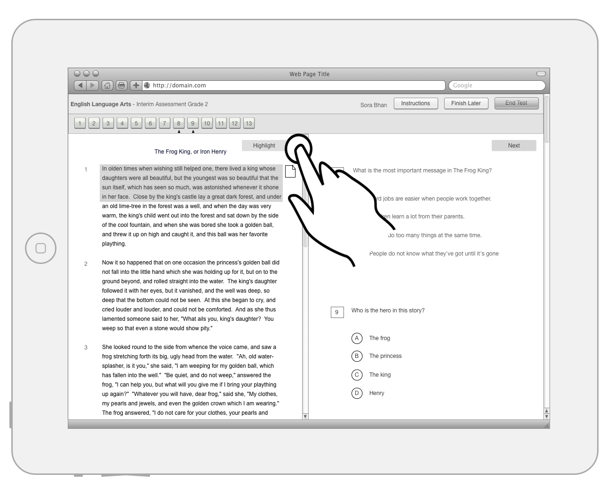
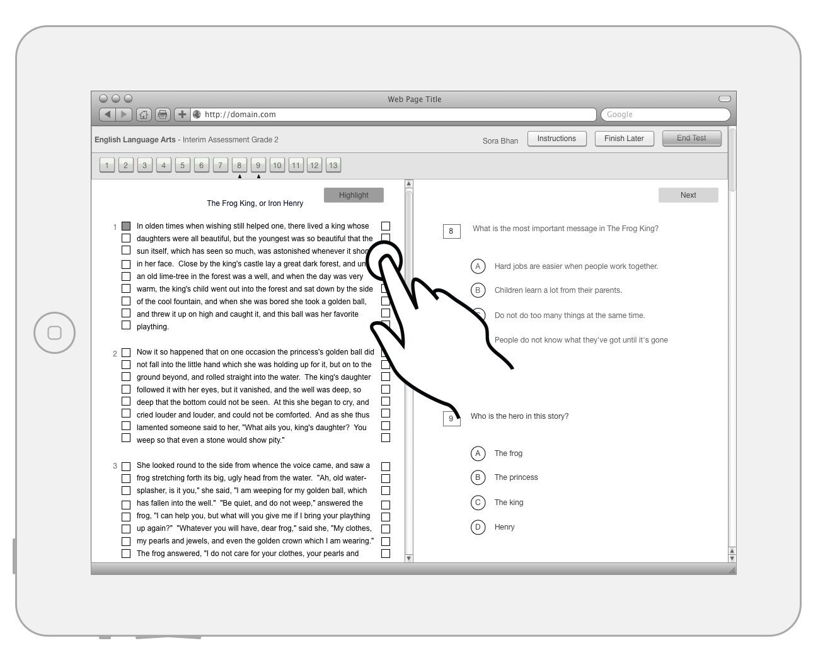
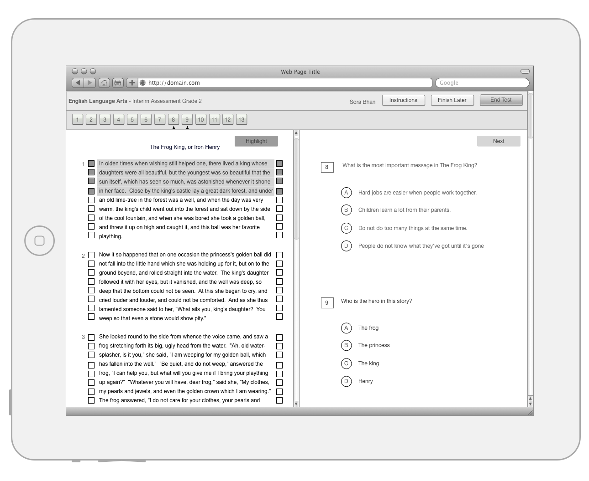
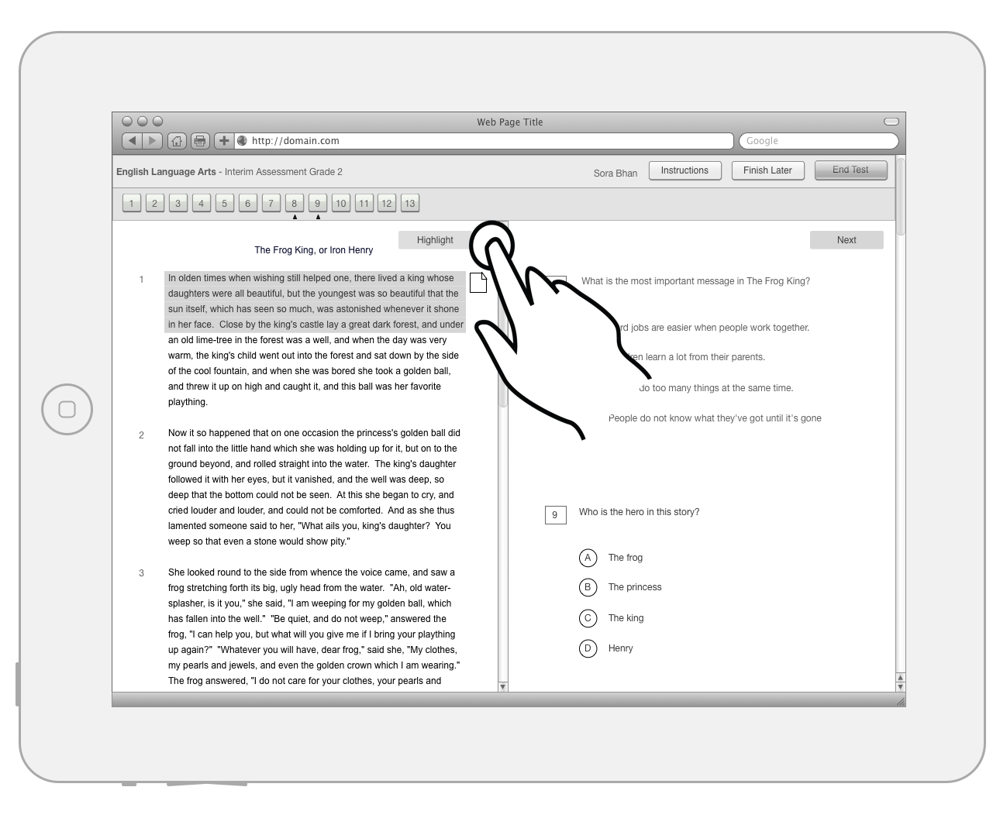
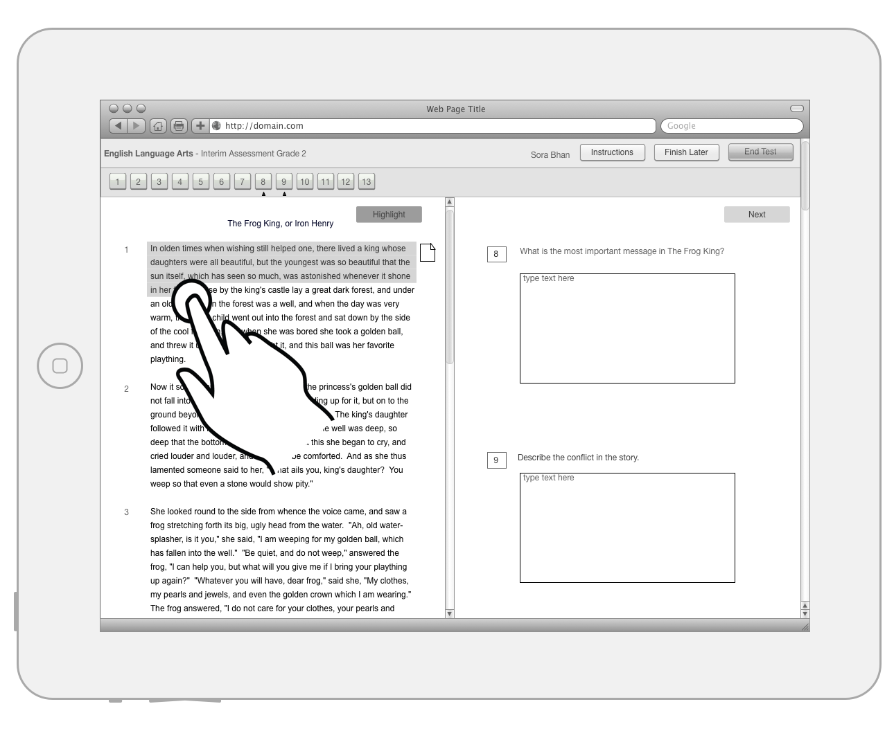
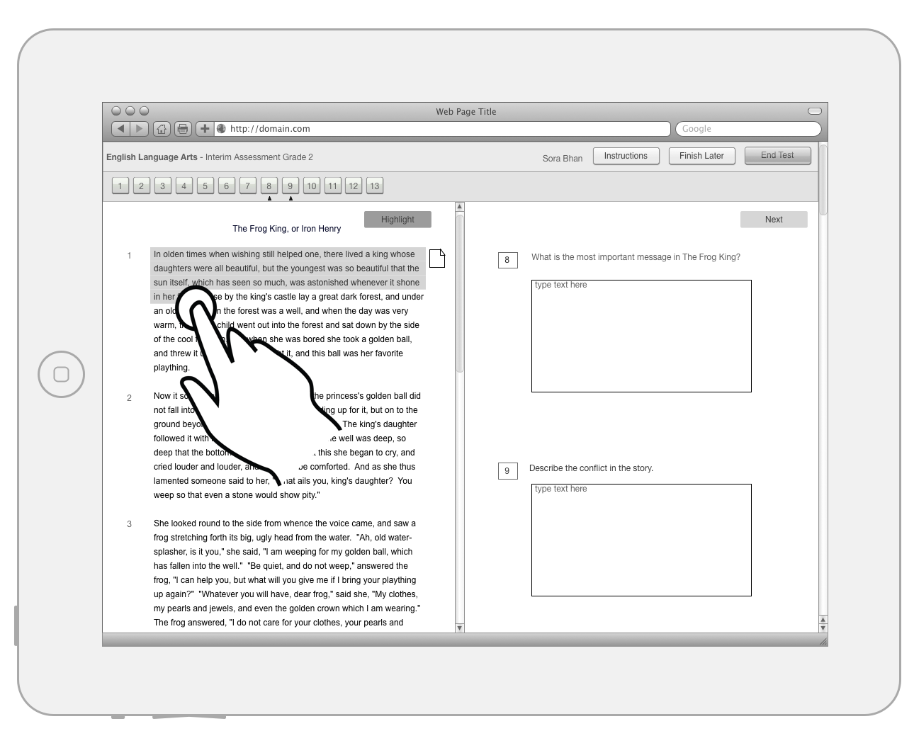

After some user testing we think these options will work well. (These images use iPads, but the same approaches would apply to laptops/desktops.)
1: Highlighting and notes in context menu
Usage
- Highlighting & notes tool pops up at end of selected text, above any default tablet pop-up.
- Sticky Note spawns a new note that sticks to side of highlighted sections.
Pros/Cons
- Good for students who like one note per highlighted section.
- Bad for students who have trouble selecting text on tablets.
2: Highlighting in context, Notes in tab
Usage
- Single note for whole page in it's own tab.
- Portions of highlighted sections appear for student to reference.
- Highlighting the same as #1.
Pros/Cons
- Good for students who prefer to read all notes at once when answering items.
- Better for students who have trouble selecting text. They can still use Notes.
3: Highlighting in context, Notes in widget

Usage
- Single note for whole page.
- Highlighting the same as #1.
Pros/Cons
- Compared to #2 saves some space at the top.


 







 
